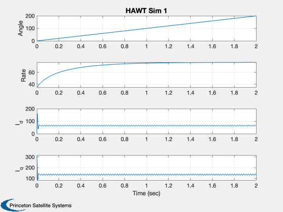
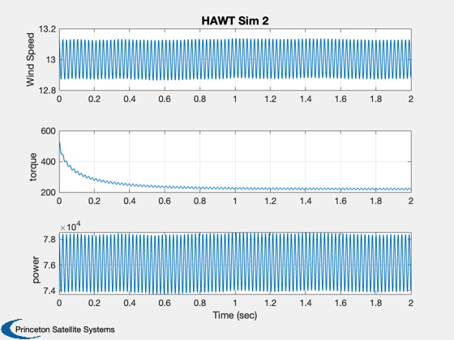
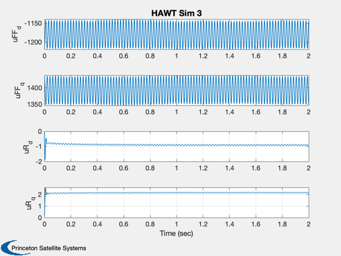

Simulate a horizontal axis 3 blade wind turbine.
This simulation demonstrates linear quadratic regulator control of the turbine speed. This does not model the yaw control. Blade pitch is held fixed.
------------------------------------------------------------------------ See also QCR, Plot2D, TimeLabl, Jacobian, RK4, TorqueHAWT, WindDeterministic, WindStochastic ------------------------------------------------------------------------
Contents
%--------------------------------------------------------------------------- % Copyright (c) 2007 Princeton Satellite Systems, Inc. % All rights reserved. %---------------------------------------------------------------------------
Simulation parameters
%----------------------
nSim = 2000;
dT = 0.001;
Model parameters
%-----------------
rTurbine = 3;
angle = 0;
Generator
%---------- d.rS = 4.3; d.lMD = 27e-3; d.lMQ = d.lMD; d.inr = 1; d.p = 2; % Pole pairs d.psi = 0.272;
Wind model
%----------- d.tau = 1; d.n = 3; % blades/harmonics d.dT = dT; d.sigmaWind = 0.5; wMean = 13; d.dTF = rTurbine/wMean; windFactor = 0*0.3; omegaWind = 10; d.wMean = wMean; d.wHarm = 0.01; WindStochastic( 'init', d );
Turbine model
%-------------- d.rTurbine = rTurbine; d.beta = 0; d.rho = 1.225; d.startup = 0.01; % Wind power to torque at startup
States
%------- omegaW = d.wMean*8/d.rTurbine; p = 2*d.p; d.wind = wMean; iQW = (2/(3*p*d.psi))*TorqueHAWT( omegaW, d ); current = [0;iQW]; x = [angle;omegaW;current]; d.u = [-p*omegaW*d.lMD*iQW;d.rS*iQW + p*omegaW*d.psi]; a = Jacobian( 'HAWTRHS', x, 0, d ); disp('These are the linearized state matrix and input matrices about the operating point.') a = a(2:4,2:4) b = [0 0;1 0;0 1]/d.lMD aA = [0 0 1.5*p*d.psi/d.inr;p*iQW -d.rS/d.lMD p*omegaW;-p*d.psi/d.lMD -p*omegaW -d.rS/d.lMD]; disp('The linear quadratic gain matrix at the operating point.') kR = QCR( a, b, diag([1 0.1 0.1]), eye(2) ) disp('The closed loop eigenvalues with the linear quadratic controller.') eig( a - b*kR) xP = zeros(11,nSim); t = 0; disp('Running the simulation which only models the mean wind.') disp('The generator control feedforwards the expected control voltage and then controls about that voltage') disp('With the linear quadratic regulator. We assume that we measure all states including turbine rotational speed') disp('and generator currents.') disp('Control is done by applying direct and quadrature voltages.')
These are the linearized state matrix and input matrices about the operating point.
a =
-17.761 0 -1.632
0 -159.25 400
0 -400 -159.26
b =
0 0
37.037 0
0 37.037
The linear quadratic gain matrix at the operating point.
kR =
0.0035545 0.011626 -5.1864e-06
-0.0015768 -5.1864e-06 0.011615
The closed loop eigenvalues with the linear quadratic controller.
ans =
-17.761 + 0i
-159.69 + 400i
-159.69 - 400i
Running the simulation which only models the mean wind.
The generator control feedforwards the expected control voltage and then controls about that voltage
With the linear quadratic regulator. We assume that we measure all states including turbine rotational speed
and generator currents.
Control is done by applying direct and quadrature voltages.
Simulation loop
%---------------- for k = 1:nSim % Measurements %------------- d.angle = x(1); % Wind %----- d.wMean = wMean*(1 - windFactor*sin(omegaWind*t)); d.wind = WindStochastic( 'run', d ) + WindDeterministic( d ); % Generator Control %------------------ omegaW = d.wMean*8/d.rTurbine; p = 2*d.p; iQW = (2/(3*p*d.psi))*TorqueHAWT( omegaW, d ); % The nonlinear feedforward based on the set point (omegaW) % based on windspeed and desired tip speed ratio %---------------------------------------------------------- uFF = [-p*omegaW*d.lMD*iQW;d.rS*iQW + p*omegaW*d.psi]; % The LQ controller about the set point for speed and current %------------------------------------------------------------ uR = -kR*(x(2:4) - [omegaW;0;iQW]); d.u = uFF + uR; % Plot %----- [torque, power] = TorqueHAWT( x(2), d ); xP(:,k) = [x;d.wind;uFF;uR;torque;power]; % RHS %---- x = RK4( 'HAWTRHS', x, dT, 0, d ); t = t + dT; end [t, tL] = TimeLabl( nSim, dT );
Plot
%------ xL = {'Angle', 'Rate', 'I_d', 'I_q', 'Wind Speed', 'uFF_d', 'uFF_q' 'uR_d' 'uR_q' 'torque' 'power'}; Plot2D( t, xP(1:4,:), tL, xL(1:4), 'HAWT Sim 1' ) Plot2D( t, xP([5 10 11] ,:), tL, xL([5 10 11]), 'HAWT Sim 2' ) Plot2D( t, xP(6:9 ,:), tL, xL(6:9), 'HAWT Sim 3' ) % PSS internal file version information %-------------------------------------- % $Date$ % $Id: dd4dc449cd47341251c4d9962e6e3f53f6cadc0e $  